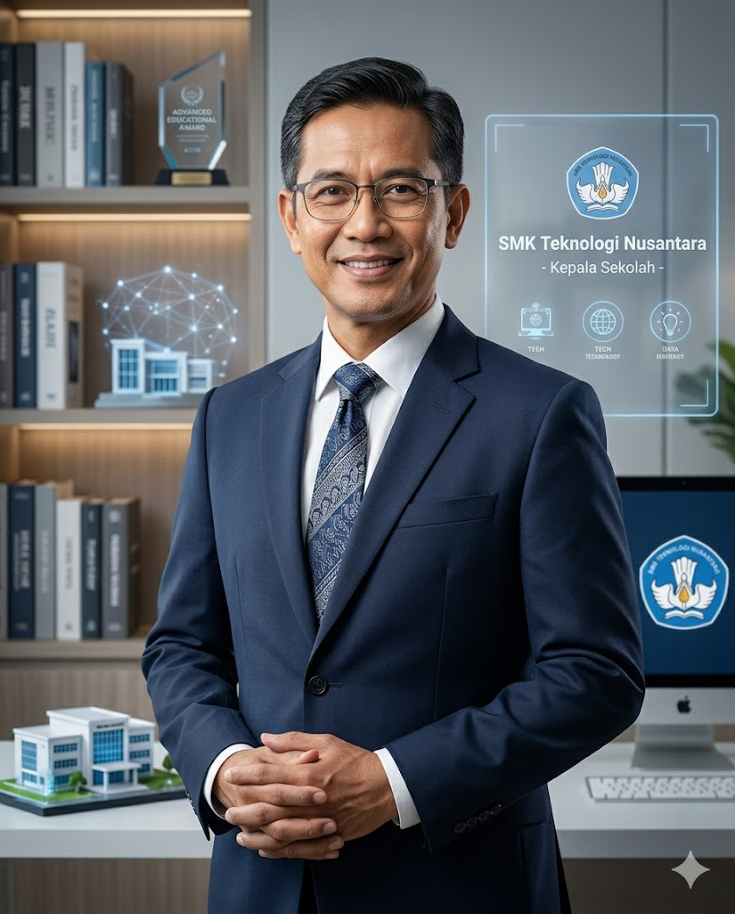

SMK Teknologi Nusantara

Selamat datang di SMK Teknologi Nusantara. Kami berkomitmen menciptakan lingkungan belajar modern, kreatif, dan inovatif untuk membentuk generasi unggul di era digital.
Dengan dukungan fasilitas lengkap dan tenaga pengajar profesional, kami siap membantu siswa berkembang sesuai bakat dan minatnya.
SMK Teknologi Nusantara didirikan pada tahun 2010 dengan tujuan menciptakan sekolah kejuruan berbasis teknologi modern yang mampu menghasilkan lulusan siap kerja dan siap bersaing di dunia industri.
Seiring perkembangan zaman, sekolah terus meningkatkan kualitas pendidikan, fasilitas, dan kerja sama industri demi mendukung kemampuan siswa dalam bidang digital dan teknologi.
Menjadi sekolah kejuruan unggulan berbasis teknologi dan kreativitas di tingkat nasional.
| Nama Sekolah | SMK Teknologi Nusantara |
| Tahun Berdiri | 2010 |
| Akreditasi | A |
| Jumlah Siswa | 1.200 Siswa |
| Alamat | Jl. Merdeka No.12, Bandung |